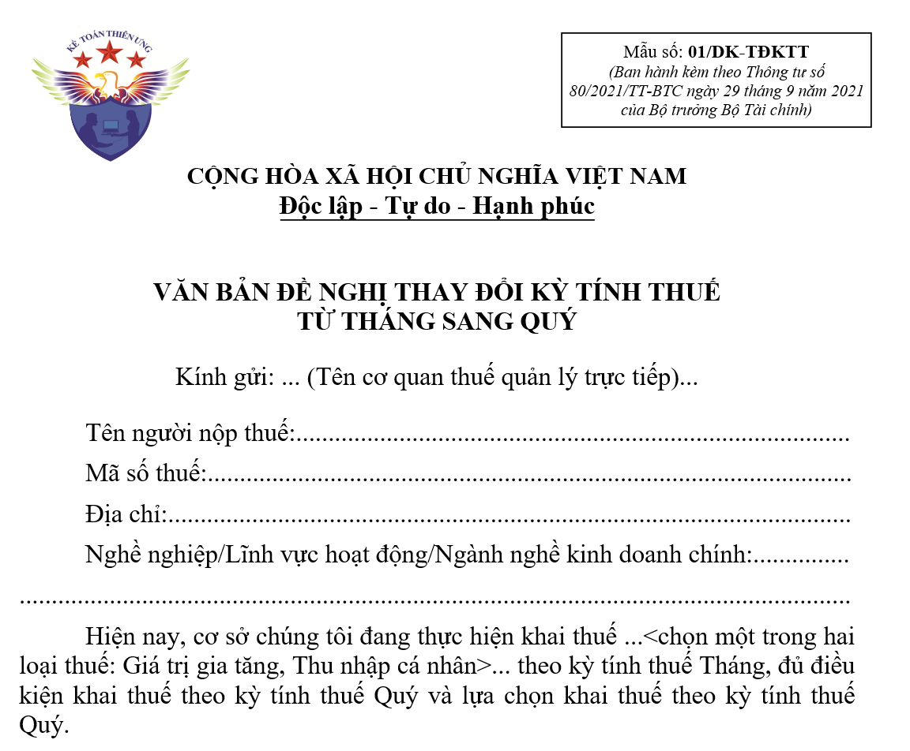

Mẫu chuyển đổi kỳ kê khai thuế GTGT từ tháng sang quý mới nhất năm 2026 hiện nay là 01/ĐK-TĐKTT được ban hành kèm theo Nghị định 126/2020/NĐ-CP và Thông tư 80/2021/TT-BTC
Mẫu 01/ĐK-TĐKTT - Văn bản đề nghị thay đổi kỳ tính thuế từ tháng sang quý
CỘNG HÒA XÃ HỘI CHỦ NGHĨA VIỆT NAM Độc lập - Tự do - Hạnh phúc
VĂN BẢN ĐỀ NGHỊ THAY ĐỔI KỲ TÍNH THUẾ
TỪ THÁNG SANG QUÝ
Kính gửi: ... (Tên cơ quan thuế quản lý trực tiếp)...
Tên người nộp thuế:......................................................................................Mã số thuế:.................................................................................................... Địa chỉ:.......................................................................................................... Nghề nghiệp/Lĩnh vực hoạt động/Ngành nghề kinh doanh chính:............... ................................................................................................................................. Hiện nay, cơ sở chúng tôi đang thực hiện khai thuế ...<chọn một trong hai loại thuế: Giá trị gia tăng, Thu nhập cá nhân>... theo kỳ tính thuế Tháng, đủ điều kiện khai thuế theo kỳ tính thuế Quý và lựa chọn khai thuế theo kỳ tính thuế Quý. Cơ sở chúng tôi đề nghị được áp dụng kỳ tính thuế ...<chọn một trong hai loại thuế: Giá trị gia tăng, Thu nhập cá nhân>... theo Quý kể từ kỳ tính thuế Quý I năm ... Cơ sở chúng tôi xin cam kết thực hiện tính thuế, khai thuế và nộp thuế theo đúng quy định của Luật Quản lý thuế, các văn bản quy phạm pháp luật thuế có liên quan (bao gồm cả các văn bản quy phạm pháp luật sửa đổi, bổ sung cũng như quy định chi tiết) hiện hành. Nếu vi phạm luật thuế và các chế độ quy định, chúng tôi xin chịu xử lý theo pháp luật./.
|
--------------------------------------------
Các bạn muốn tải (download) Mẫu 01/ĐK-TĐKTT - Văn bản đề nghị thay đổi kỳ tính thuế từ tháng sang quý về để tham khảo và sử dụng thì có thể gửi mail về địa chỉ mail: ketoandieutam@gmail.com => Kế Toán Diệu Tâm sẽ gửi lại Mẫu 01/ĐK-TĐKTT - Văn bản đề nghị thay đổi kỳ tính thuế từ tháng sang quý này cho các bạn
--------------------------------------------
Quy định về việc thông báo thay đổi kỳ kê khai thuế
Điều 9. Tiêu chí khai thuế theo quý đối với thuế giá trị gia tăng và thuế thu nhập cá nhân
2. Người nộp thuế có trách nhiệm tự xác định thuộc đối tượng khai thuế theo quý để thực hiện khai thuế theo quy định.
a) Người nộp thuế đáp ứng tiêu chí khai thuế theo quý được lựa chọn khai thuế theo tháng hoặc quý ổn định trọn năm dương lịch.
b) Trường hợp người nộp thuế đang thực hiện khai thuế theo tháng nếu đủ điều kiện khai thuế theo quý và lựa chọn chuyển sang khai thuế theo quý thì gửi văn bản đề nghị quy định tại Phụ lục I ban hành kèm theo Nghị định này đề nghị thay đổi kỳ tính thuế đến cơ quan thuế quản lý trực tiếp chậm nhất là 31 tháng 01 của năm bắt đầu khai thuế theo quý, Nếu sau thời hạn này người nộp thuế không gửi văn bản đến cơ quan thuế thì người nộp thuế tiếp tục thực hiện khai thuế theo tháng ổn định trọn năm dương lịch.
c) Trường hợp người nộp thuế tự phát hiện không đủ điều kiện khai thuế theo quý thì người nộp thuế phải thực hiện khai thuế theo tháng kể từ tháng đầu của quý tiếp theo. Người nộp thuế không phải nộp lại hồ sơ khai thuế theo tháng của các quý trước đó nhưng phải nộp Bản xác định số tiền thuế phải nộp theo tháng tăng thêm so với số đã kê khai theo quý quy định tại Phụ lục I ban hành kèm theo Nghị định này và phải tính tiền chậm nộp theo quy định.
d) Trường hợp cơ quan thuế phát hiện người nộp thuế không đủ điều kiện khai thuế theo quý thì cơ quan thuế phải xác định lại số tiền thuế phải nộp theo tháng tăng thêm so với số người nộp thuế đã kê khai và phải tính tiền chậm nộp theo quy định. Người nộp thuế phải thực hiện khai thuế theo tháng kể từ thời điểm nhận được văn bản của cơ quan thuế.
===========================================
Thủ tục hành chính: Thay đổi kỳ tính thuế giá trị gia tăng, thu nhập cá nhân từ tháng sang quý
trên cổng Dịch Vụ Công
Trình tự thực hiện
+ Bước 1. Người nộp thuế đang thực hiện khai thuế theo tháng nếu đủ điều kiện khai thuế theo quý và lựa chọn chuyển sang khai thuế theo quý theo quy định tại Điều 9 Nghị định số 126/2020/NĐ-CP ngày 19/10/2020 của Chính phủ quy định chi tiết một số điều của Luật Quản lý thuế thì phải lập hồ sơ, văn bản đề nghị thay đổi kỳ tính thuế giá trị gia tăng (GTGT), thu nhập cá nhân (TNCN) từ tháng sang quý gửi đến cơ quan thuế quản lý trực tiếp chậm nhất là 31 tháng 01 của năm bắt đầu khai thuế theo quý.
Trường hợp người nộp thuế gửi hồ sơ qua giao dịch điện tử: Người nộp thuế (NNT) truy cập vào Cổng thông tin điện tử mà người nộp thuế lựa chọn (Cổng thông tin điện tử của Tổng cục Thuế/Cổng thông tin điện tử của cơ quan nhà nước có thẩm quyền bao gồm: Cổng dịch vụ công quốc gia, Cổng dịch vụ công cấp Bộ, cấp tỉnh theo quy định về thực hiện cơ chế một cửa, một cửa liên thông trong giải quyết thủ tục hành chính và đã được kết nối với Cổng thông tin điện tử của Tổng cục Thuế (sau đây gọi là Cổng thông tin điện tử của cơ quan nhà nước có thẩm quyền)/Cổng thông tin của tổ chức cung cấp dịch vụ T-VAN) để khai hồ sơ khai thuế và các phụ lục đính kèm theo quy định dưới dạng điện tử (nếu có), ký điện tử và gửi đến cơ quan thuế qua Cổng thông tin điện tử mà người nộp thuế lựa chọn.
+ Bước 2. Cơ quan thuế tiếp nhận:
++ Trường hợp hồ sơ được nộp trực tiếp tại cơ quan thuế hoặc được gửi qua đường bưu chính: cơ quan thuế thực hiện tiếp nhận hồ sơ theo quy định.
++ Trường hợp hồ sơ được nộp thông qua giao dịch điện tử, việc tiếp nhận, kiểm tra, chấp nhận, giải quyết hồ sơ thông qua hệ thống xử lý dữ liệu điện tử của cơ quan thuế:
+++ Tiếp nhận hồ sơ: Cổng thông tin điện tử của Tổng cục Thuế gửi thông báo tiếp nhận việc NNT đã nộp hồ sơ hoặc thông báo lý do không tiếp nhận hồ sơ cho NNT qua Cổng thông tin điện tử mà người nộp thuế lựa chọn lập và gửi hồ sơ (Cổng thông tin điện tử của Tổng cục Thuế/Cổng thông tin điện tử của cơ quan nhà nước có thẩm quyền hoặc tổ chức cung cấp dịch vụ T-VAN) chậm nhất 15 phút kể từ khi nhận được hồ sơ khai thuế điện tử của người nộp thuế.
+++ Kiểm tra, giải quyết hồ sơ: Cơ quan thuế thực hiện kiểm tra, giải quyết hồ sơ khai thuế của NNT theo quy định của Luật Quản lý thuế và các văn bản hướng dẫn thi hành:
Cơ quan thuế gửi thông báo chấp nhận/không chấp nhận hồ sơ đến Cổng thông tin điện tử mà NNT lựa chọn lập và gửi hồ sơ (Cổng thông tin điện tử của Tổng cục Thuế/Cổng thông tin điện tử của cơ quan nhà nước có thẩm quyền hoặc tổ chức cung cấp dịch vụ T-VAN) chậm nhất 01 ngày làm việc kể từ ngày ghi trên thông báo tiếp nhận nộp hồ sơ khai thuế điện tử.
Tên giấy tờ: Văn bản đề nghị thay đổi kỳ tính thuế từ tháng sang quý mẫu số 01/ĐK-TĐKTT theo Danh mục hồ sơ khai thuế tại Phụ lục I ban hành kèm theo Nghị định số 126/2020/NĐ-CP ngày 19/10/2020 của Chính phủ quy định chi tiết một số điều của Luật Quản lý thuế và phụ lục II ban hành kèm theo Thông tư số 80/2021/TT-BTC ngày 29/9/2021 của Bộ trưởng Bộ Tài chính hướng dẫn thi hành một số điều của Luật Quản lý thuế và Nghị định số 126/2020/NĐ-CP ngày 19/10/2020 của Chính phủ quy định chi tiết một số điều của Luật Quản lý thuế
